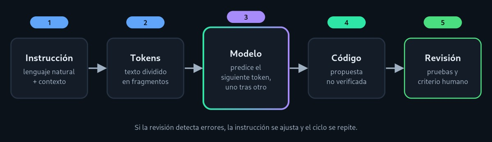

Cómo funciona un asistente de código
De una frase en español a una función en JavaScript: el recorrido interno, explicado paso a paso.
El recorrido de una instrucción
Selecciona cada etapa para ver qué ocurre. También puedes usar las flechas del teclado.

La persona describe lo que necesita
La instrucción puede ser una frase («valida un correo»), un fragmento de código incompleto o un mensaje de error. El asistente añade el contexto disponible: el archivo abierto, otros archivos del proyecto o la conversación anterior. Cuanto más claro es el pedido, menos tiene que «adivinar» el modelo.
El texto se convierte en tokens
El modelo no lee letras sueltas ni palabras completas, sino tokens: fragmentos que se transforman en números. En la sección siguiente puedes ver una versión simplificada de este paso.
El modelo calcula qué token es más probable
Mediante la arquitectura Transformer, el modelo pondera qué partes del contexto son relevantes para cada nueva predicción [1]. Para cada posición calcula probabilidades sobre todos los tokens posibles. Ejemplo ilustrativo después de return en una función de suma:
Valores inventados con fines didácticos; no provienen de un modelo real.
El código se construye token por token
Se elige un token (no siempre el más probable, porque hay un parámetro de «temperatura» que introduce variación), se añade a lo ya escrito y se repite. Por eso la misma instrucción puede producir respuestas distintas, y por eso el resultado puede ser plausible pero incorrecto.
La persona revisa, prueba y decide
El modelo no ejecuta ni verifica su propia propuesta, a menos que se le conecte a herramientas. La revisión humana comprueba que el código sea correcto, seguro y comprensible. Practica este paso en la demostración.
Prueba un tokenizador
Escribe una instrucción o una línea de código y mira cómo se divide. Esta versión separa palabras, números y símbolos; los modelos reales usan subpalabras, así que sus cifras serán distintas.
Violeta: palabras y números. Verde: símbolos.
Cómo aprende el modelo
- Preentrenamiento. El modelo lee enormes cantidades de texto y código y aprende a predecir el siguiente token [2].
- Especialización en código. Se refuerza con repositorios públicos para que reconozca patrones de programación [4].
- Ajuste con instrucciones y retroalimentación humana. Personas evalúan respuestas y el modelo se adapta para ser más útil y seguir lo que se le pide [3].
Límites que conviene recordar
- Su conocimiento termina en la fecha de entrenamiento: pueden desconocer versiones nuevas de una biblioteca.
- La ventana de contexto es finita: en proyectos grandes no «ve» todo el código.
- Puede inventar funciones o parámetros que no existen.
- No conoce las reglas internas de tu equipo si no se las das.